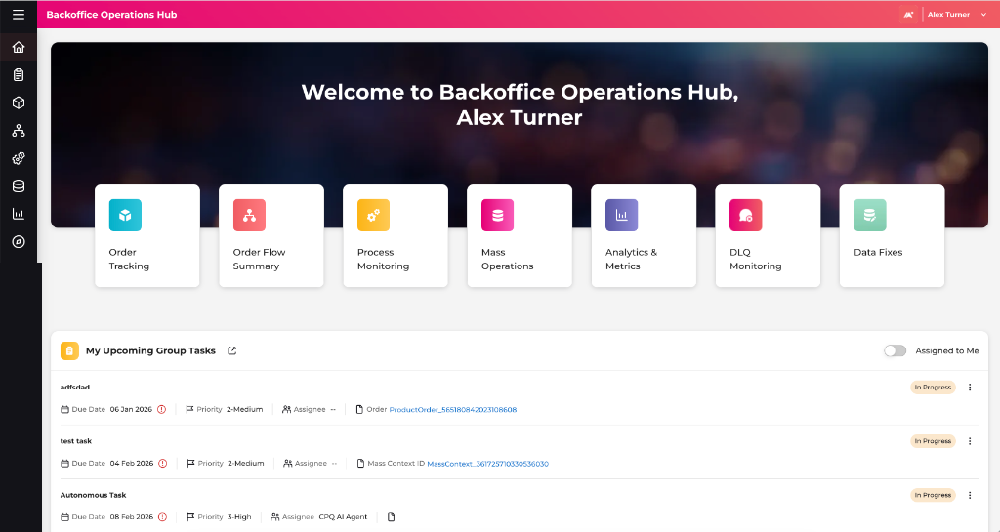
Platform Overview
A centralized workspace consolidating 9 fragmented legacy tools into a single dashboard. Enables support engineers to safely monitor systems, investigate fallouts, and execute production updates.
Legacy processes forced support agents to switch between CLI logs and database terminals, causing high diagnostic search latency, human query errors, and delayed resolution times.
Tool Hopping:
Support engineers had to log into 9 separate systems to trace and resolve a single failed order.
Buried Errors:
Failure details sat inside raw logs, completely isolated from order management dashboards.
Unified Search:
A single query bar to locate transaction contexts across all databases instantly.
Lifecycle Flows:
Showing error callouts directly on interactive flowcharts to replace raw CLI logs.
The Swivel-Chair Problem
Prior to this platform, support teams operated with extremely low context. Operators suffered from "swivel-chair" behaviors, constantly switching logins and systems to trace a single order's progression.
System halts execution silently with no proactive notification.
Operators search legacy databases and check Camunda tasks separately.
Operators dig into Kibana indices, manually correlating process IDs.
Once identified, raw SQL patches are executed with zero validation rules.
Product Scope & Radial Architecture
The radial interface maps out the 9 consolidated modules integrated under a shared navigation core:
Platform Layered Architecture Map
Platform thinking means designing structure patterns, not single pages. The platform IA establishes how modules connect, defining global capabilities (Universal Search, Audits) as cross-cutting services.
Why we chose investigation-path breadcrumbs instead of static system hierarchy
Dynamic process breadcrumbs mirror the transactional flow of the order (Checkout → Billing → Activation) rather than folder structures, keeping operators oriented inside the failure timeline.
How did we design scalable enterprise bulk operations?
Problem
Production teams needed to perform high-volume operational actions—including bulk retries, scheduled executions, and large-scale updates across Product Inventory and Product Orders. Existing approaches relied on manual effort or engineering scripts, resulting in slow execution, limited operational control, and increased production risk.
UX Contribution
- Designed an intuitive workflow for executing high-volume operational changes, reducing the complexity of configuring bulk actions.
- Introduced progressive filtering to help operators accurately identify the target population before executing mass updates.
- Created consistent scheduling and execution experiences that improved confidence while performing production-scale operations.
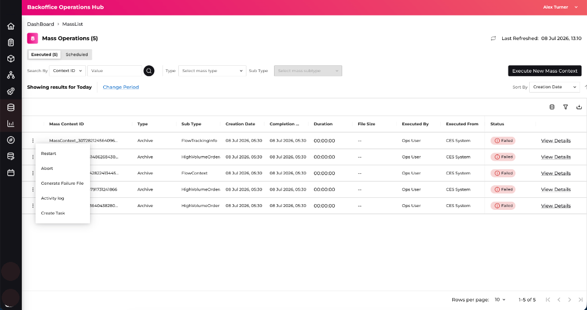
The unified Mass Operations dashboard console displaying execution metrics, progressive filters, active jobs list, and contextual trigger actions.
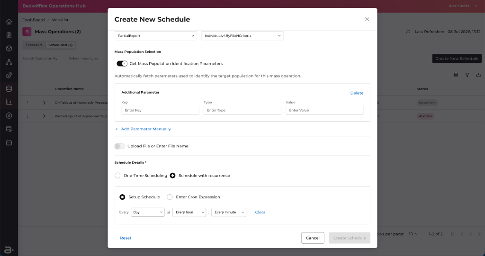
The recurring schedule creation wizard, allowing operators to configure automated execution times and scope query parameters.
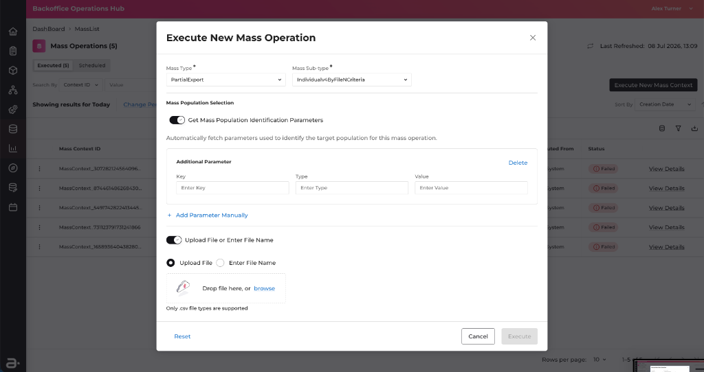
The dynamic run execution dialog, allowing operators to upload CSV batch files or configure manual execution inputs.
Why we intentionally hid configuration options until they became relevant
Prevents accidental executions by locking the execution trigger until the operator explicitly confirms the target scope, ensuring every bulk run is a conscious decision.
- Consolidated 9 legacy support platforms into a unified bulk activities workspace.
- Reduced operational error rates by hiding trigger actions until scope targets are validated.
- Enabled operations teams to execute massive batch updates independently.
How did we help production engineers investigate failed telecom orders?
Problem
Fulfillment processes are long-running and cross multiple API boundaries. Locating where an order stalled forced operators to dig through raw log dumps, resulting in a 30+ minute MTTR.
UX Contribution
- Designed visual order state node trees showing execution progress in real-time.
- Built a progressive disclosure sidebar overlay to query logs directly in-context.
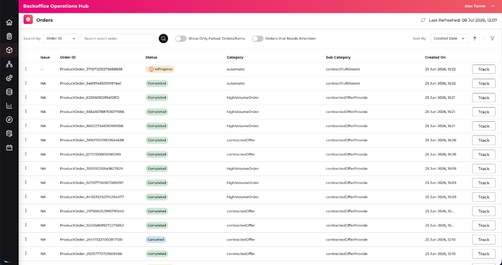
The main Order Tracking console displaying the active orders queue table, order status summaries, and track actions list.
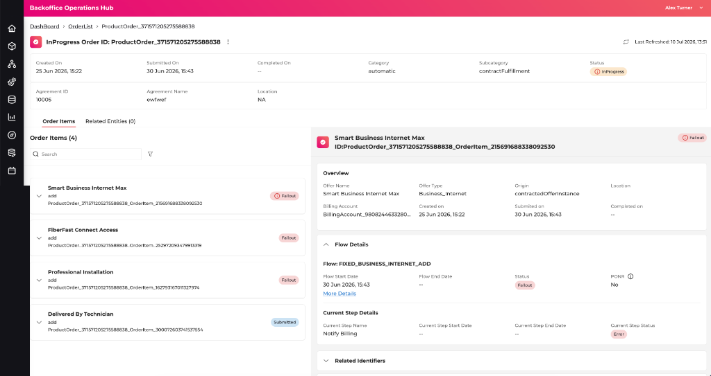
Step 01: Order Details Page — The detailed order investigation panel. Clicking the "More Details" link in the Flow Details section launches the full flowchart.
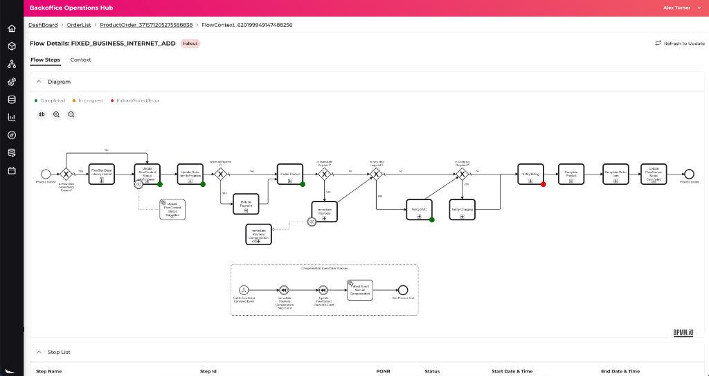
Step 02: Flow Diagram — The full-page overlay modal displaying the interactive BPMN flowchart diagram, with the failing step (Notify Billing) highlighted in red.
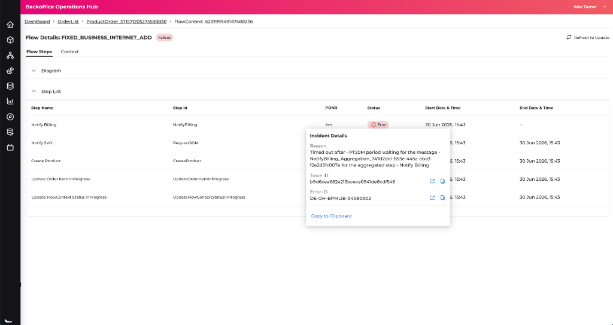
Step 03: Incident Details Popover — Selecting the failed step reveals a contextual popup detailing the timeout reason, Trace ID, and Error ID.
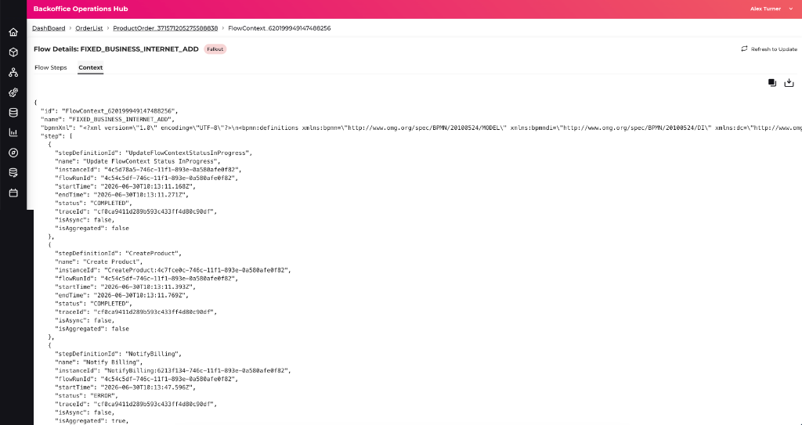
Step 04: Raw Context Log — The Context tab displays the raw, structured execution log data payload for advanced engineering forensics.
Why we chose visual execution flows instead of sequential log tables
Support engineers diagnose by process stages (e.g. "Is inventory reserved?"), not timestamped text lines. Overlaying stack errors directly onto flowchart nodes allows L3 support to isolate API failures in seconds without reading raw logs.
- Reduced cognitive load when identifying system failure points across thousands of API transactions.
- Standardized layout structures for visual order mapping and failure diagnostics.
- Improved coordination between frontline customer operations and developer engineering teams.
How did we replace engineering scripts with guided production workflows?
Problem
Correcting minor data anomalies (e.g. invalid date limits, service mismatches) forced support engineers to raise tickets for developers to write raw SQL scripts, delaying resolutions by days.
UX Contribution
- Designed secure, step-guided Single and Bulk Patch workflows for support agents.
- Architected the metadata-driven UI rendering engine to scale input controls.
Why we built one reusable form framework instead of designing dozens of individual screens
Because patch parameters vary wildly, designing custom views was unsustainable. The configuration-driven framework dynamically generates components based on schema metadata, allowing engineering to launch new patches with zero code changes.
Single Patch Workflow
Provides a guided path: target Domain selection → Entity Type selector → ID search → dynamic input parameters generation → configuration review → execution approval. Only relevant controls appear in the view, reducing human error.
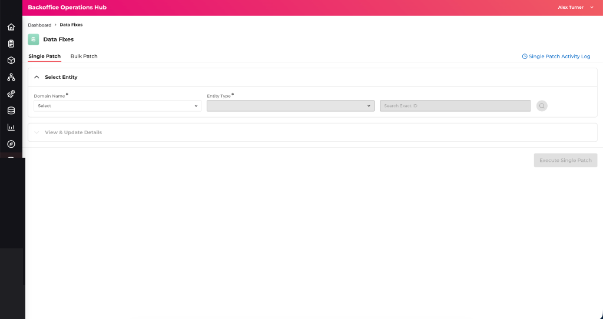
The step-guided Single Patch console displaying domain scopes, entity type selections, and exact ID search boundaries.
Bulk Patch Workflow
Uses a progressive refinement model. Instead of picking a single record, operators select configuration variables first, and then filter target populations based on Product, Offer, Status, or Date limits.
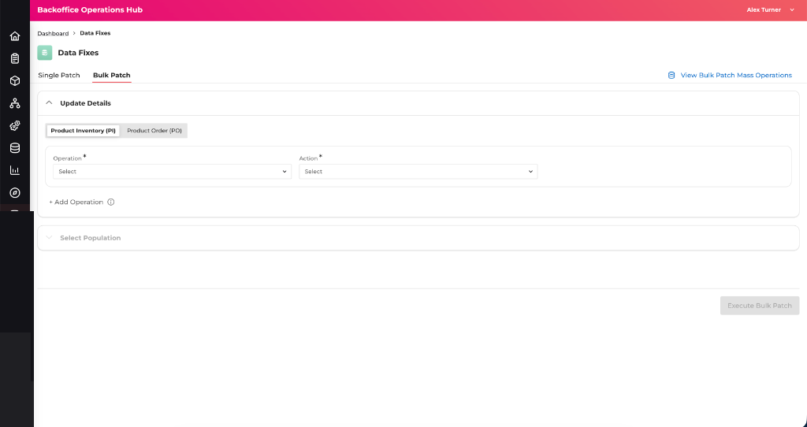
The initial Bulk Patch execution console displaying the expanded Update Details pane and Operation/Action dropdown selections.
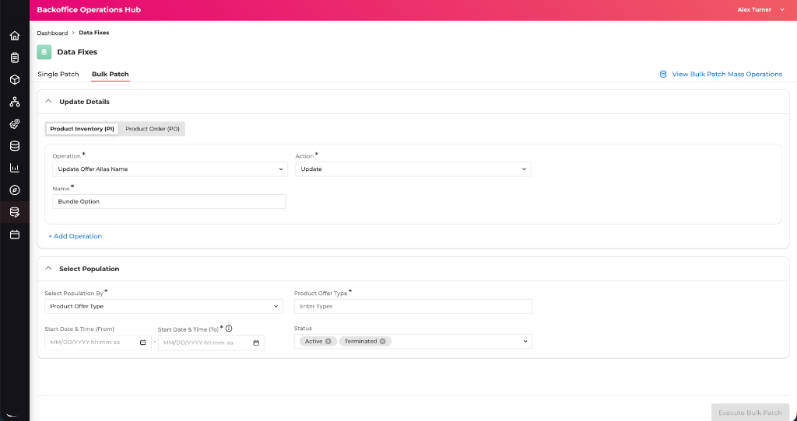
The configured Bulk Patch view showing the expanded Select Population parameters panel.
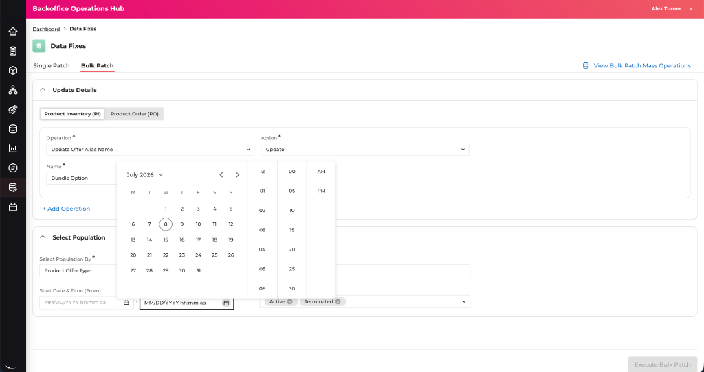
The calendar date picker popover overlay, allowing operators to scope the start and end execution periods precisely.
- Enabled safer data remediation for billing and provisioning records directly via support tools.
- Established reusable guidelines for mass bulk operations validation and preview check gates.
- Prevented accidental data entry errors through clear preview validation checkpoints.
Platform Evolution
The Operations Hub evolved alongside our product strategy over several years, scaling from an MVP order viewer into an automated operations manager:
Order Tracking
Unified lookup search and visual flowcharts for failure diagnostics.
Mass Operations
Designed bulk retry schedulers and runtime safety limits.
Performance KPIs
Integrated analytics dashboards showing support SLA margins.
AI Diagnostics
Introducing AI copilots to match tracelogs to historical errors.
Design Principles Across the Platform
Although these modules address varying functional needs, they are unified under core platform UX decisions:
Operational Safety
Why we enforced mandatory validation checks, simulation testing, and multi-party reviews prior to execution.
Progressive Disclosure
Why we intentionally hid complex configuration variables until previous actions rendered them necessary.
Scalable Workflows
Why we deconstructed isolated database patches into guided, sequential wizard forms.
Configuration-Driven UI
Why we built one dynamic presentation layer parsing backend schema configs instead of multiple screens.
Reusable Interaction Patterns
Why we kept dropdowns, date pickers, and tables consistent across modules to improve learnability.
Developer Enablement
Why we provided developers with exhaustive UX rules to cut implementation cycles for future updates.
What this project taught me
Cross-Functional Collaboration
Product Management: Defined platform requirements, user personas, and roadmaps.
Solution Architecture: Co-designed transaction state logic flows and database schema models.
Engineering: Implemented configuration-driven guidelines and reusable widgets.
Designing the Operations Hub taught me that enterprise UX is not simply about interface simplification. In high-scale data operations, hiding technical depth can lead to dangerous errors.
Instead of dumbing down the environment, our role as UX Architects is to reveal system relationships clearly, design robust validation safeguards, and build configuration-driven frameworks that help developers scale and operators act with confidence.